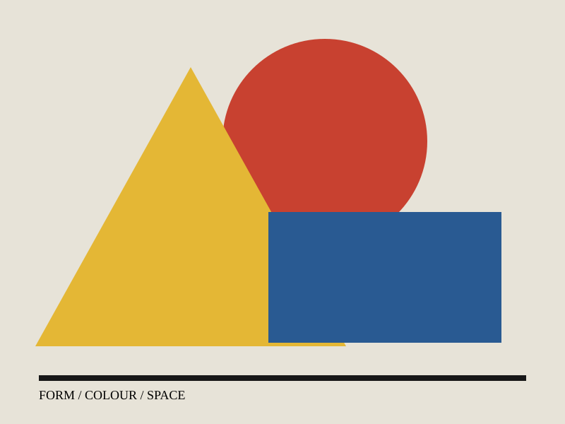

AN OPEN COLLECTION OF VISUAL CULTURE
看見風格。
讀懂設計。
從一條線、一個字，到一整個時代。
走進平面設計的視覺世界。

正在展出 04
探索所有展覽 ↗正在載入展覽…
四個展區，無限視角。
EXPLORE BY COLLECTION設計有歷史。
觀看有新的方式。
風格並非一套固定公式。本館從歷史背景、視覺特徵與當代應用出發，陪你辨識不同設計語言，也看見它們之間的連結。
沿著時間探索 ↗AN OPEN COLLECTION OF VISUAL CULTURE
從一條線、一個字，到一整個時代。
走進平面設計的視覺世界。

正在載入展覽…
風格並非一套固定公式。本館從歷史背景、視覺特徵與當代應用出發，陪你辨識不同設計語言，也看見它們之間的連結。
沿著時間探索 ↗